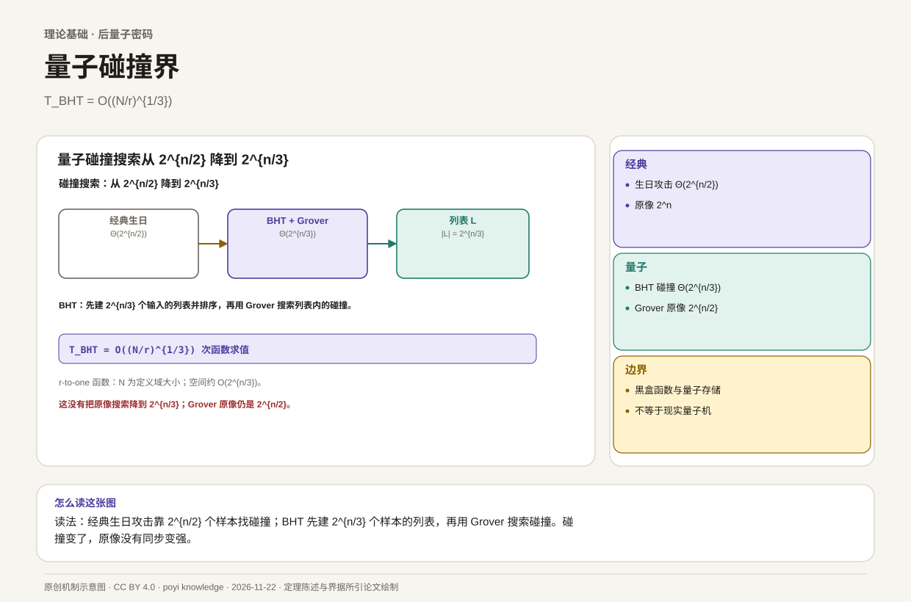
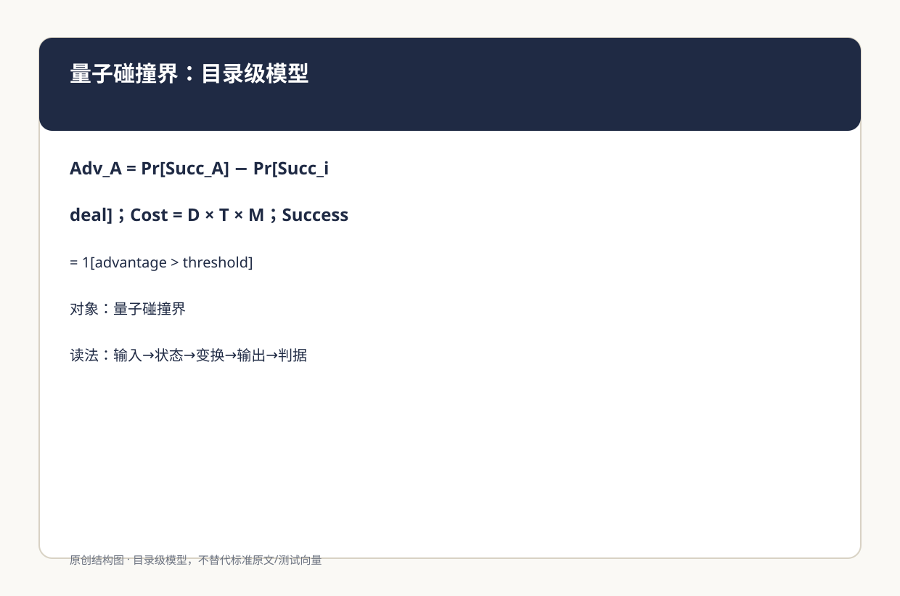

原理与机制
攻击：量子碰撞搜索（Quantum Collision Search）。### 经典碰撞搜索
对 n 位输出的哈希函数，随机取约 2^{n/2} 个输入，由生日悖论即可高概率找到一对碰撞。这是经典黑盒模型下的最优阶：Ω(2^{n/2}) 次求值。原像搜索则需约 2^n 次。### BHT 的量子算法
Brassard–Høyer–Tapp 1998 给出量子碰撞算法：对 r-to-one 函数 f:{0,1}^N→{0,1}^M，期望 O((N/r)^{1/3}) 次求值即可找到碰撞。对 n 位哈希，即 O(2^{n/3})。算法先建立约 2^{n/3} 个输入及其像的列表并排序；再用 Grover 搜索在“列表内碰撞”与“列表外新输入”之间寻找碰撞。量子搜索把剩余搜索成本降到平方根，总成本变为 2^{n/3}。### 为什么不是 2^{n/2}
经典生日攻击需要存储并比较多达 2^{n/2} 个样本；BHT 把样本数降到 2^{n/3}，并用 Grover 在剩余空间搜索。Grover 对无结构搜索只给平方根加速，所以 2^{n/2} 的经典界变成 2^{n/3}，而不是 2^{n/4}。对原像，Grover 只把 2^n 降到 2^{n/2}；碰撞与原像是两条不同的复杂度曲线。

为什么重要
如果目标是对抗经典碰撞攻击的 128 位安全，n=256 位哈希足够（2^{128}）。若还要对抗量子碰撞攻击，2^{n/3}=2^{128} 需要 n≈384 位。NIST 后量子签名（如 SPHINCS+）因此使用更长的哈希输出或调整参数集。把 256 位哈希当成“量子下仍 128 位碰撞安全”是常见错误。### 它不意味着所有原语减半
Grover 对 AES-256 的原像/密钥搜索是 2^{128}，不是 2^{256/3}；BHT 只针对碰撞。公钥密码的威胁主要来自 Shor，而不是 BHT。参数评估必须按原语和目标分别计算，不能用一个“量子加速倍数”概括。### 现实限制
BHT 需要量子随机访问存储、相干查询和大量逻辑量子比特；当前硬件远未达到 2^{85} 次相干求值。它是安全参数的下界分析，不是可执行的攻击时间表。
应用与实例
1.明确目标：抗经典碰撞、抗量子碰撞、抗原像还是抗第二原像。2.经典碰撞：n 位输出给 n/2 位安全。3.量子碰撞：按 2^{n/3} 估算，目标 b 位需要 n≥3b。4.原像：经典 2^n；量子 Grover 2^{n/2}。5.检查协议是否还依赖抗碰撞以外的性质（PRF、承诺、Merkle 树）。6.把存储、相干时间和错误校正计入现实可行性，不只看渐近指数。### 典型场景
- SPHINCS+/XMSS 等哈希签名：选择哈希输出与树高时同时考虑经典/量子碰撞。- 后量子安全类别：NIST 类别 1/3/5 的参数解释。- 区块链与代码签名：长期数据需要“先存后解”的量子抵抗评估。

边界与攻击面
1.黑盒模型。BHT 假设函数是黑盒；若算法能利用哈希内部结构，可能有更快攻击。2.量子存储模型。算法需要量子 RAM 或大量相干存储；不同成本模型会改变常数与可行性。3.只给碰撞。它不把原像搜索降到 2^{n/3}；Grover 原像仍是 2^{n/2}。4.渐近记号隐藏常数。2^{n/3} 的常数、并行化和内存访问都可能影响实际成本。5.当前硬件。逻辑量子比特、错误校正与相干时间是现实瓶颈；不能把指数当成近期时间表。6.不是所有哈希用途都只靠碰撞。MAC、PRF、承诺与零知识可能依赖不同性质，需分别分析。
历史与背景
Grover 1996 给出无结构搜索的平方根加速；Brassard、Høyer 与 Tapp 在 1997/1998 年把 Grover 用于碰撞与 claw 搜索，得到 O((N/r)^{1/3})。这篇论文成为后量子哈希安全评估的标准引用。### 后量子标准化
NIST 2016 年启动后量子密码标准化，2017 年发布 NISTIR 8105 讨论量子对密码的影响。哈希签名与对称原语的参数开始同时报告经典与量子碰撞界；BHT 因此从理论算法进入标准参数语言。
逐步示例与核验
形式模型与复算步骤
[P\approx 1-\exp!\left(-\frac{q(q-1)}{2,2^n}\right)]
量子碰撞搜索的公开参数、密钥/随机数与消息；变量说明：q 查询次数，n 输出位数。1.计算查询对数。2.代入生日界。3.与目标碰撞概率比较。边界：公式只覆盖已登记的参数与假设；参数取值、标准版本和实现细节仍以来源为准。
参考出处
- Wikipedia search entry for 量子碰撞搜索. https://zh.wikipedia.org/w/index.php?search=%E9%87%8F%E5%AD%90%E7%A2%B0%E6%92%9E%E6%90%9C%E7%B4%A2
- Handbook of Applied Cryptography (Menezes, van Oorschot, Vanstone). https://www.cacr.math.uwaterloo.ca/hac/